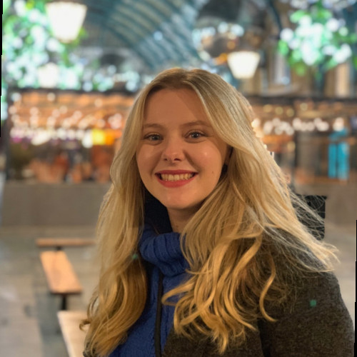
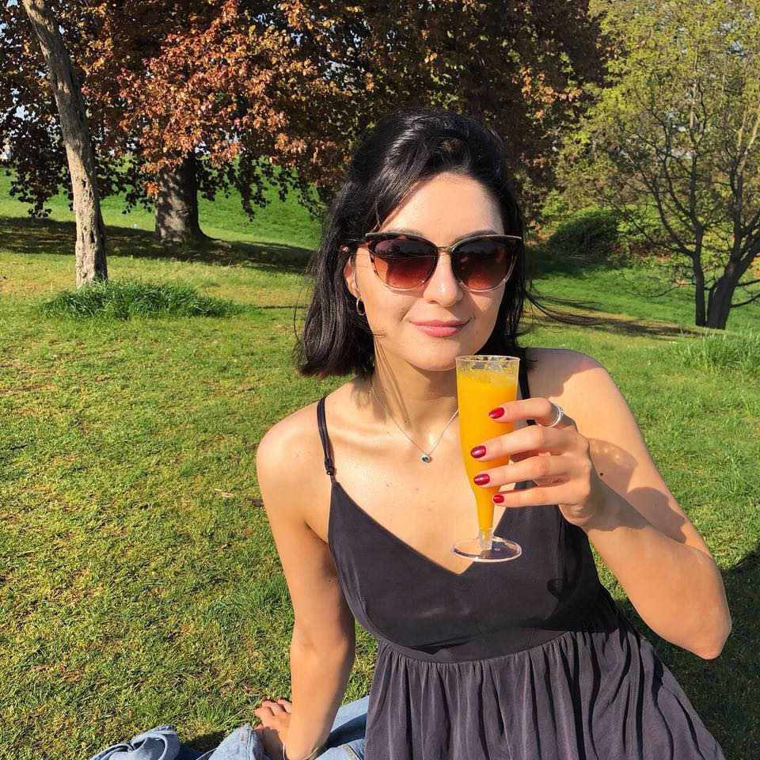
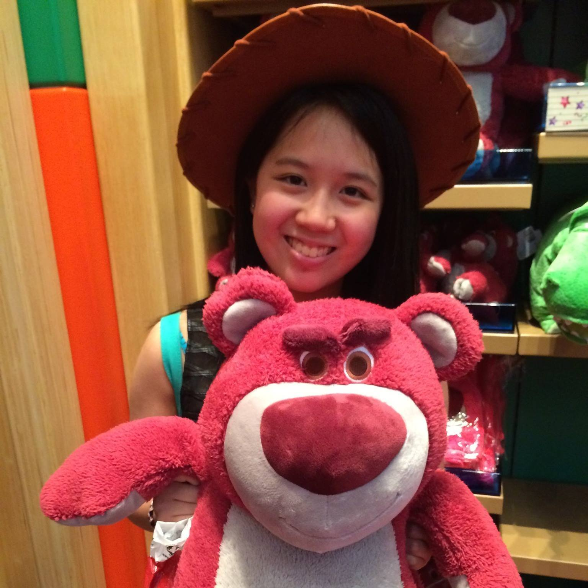

Hollie Newing
Vice President & Fundraising Officer
"Being part of Marrow has been such a rewarding experience, and I’ve had to pleasure of working alongside truly remarkable people. The work that Anthony Nolan does is incredible, and I am very proud to say that I’ve had some part in supporting it."

Lauren Clark
Donor Recruitment Officer
"One of the best things about the Marrow community is the passion that bursts from everyone involved. The work that Anthony Nolan do truly is remarkable, and it is so rewarding to be a part of it whilst at University."

Elan Parry-Lowther
Internal Publicity
"With more than 2,000 brave individuals requiring a donation each year I know there is still much work to be done and I look forward to playing whatever part I can to aid this as a member of the Committee in the upcoming year."
Alex Aranda
Secretary
"I have been following this amazing group recruiting donors and fundraising to fight blood cancer! It took over a year for me to sign up for the register and starting to volunteer for Bath Marrow, but I am so glad I did and know that I am helping others."

Chloe Chan
Publicity (External)
"Volunteering and being a committee for Bath Marrow and V Team are honestly the best decisions I have made at university and I can’t wait to do the same for my final year here. Nothing can be better than volunteering with such an amazing charity and helping cancer patients outside my studies as a pharmacist."
Eimantas Zalnieriunas
Volunteer Coordinator
"I would say the best part of being working with Bath Marrow is meeting and becoming acquainted with many passionate people, some of whom have shared heartfelt stories about why they wish to volunteer with Marrow. The family-like bond we all share makes doing life-saving work all the more fun!"